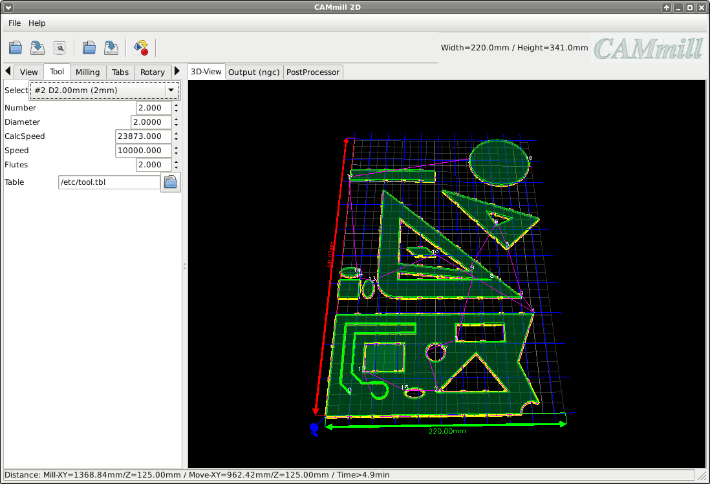

Tool
Rotaymode nutzt man um über eine 4. Achse(Drehache) auf runden Materialien zu Fräsen
Select:
Auswahl eines Werkzeugs aus der Tooltabe (FREE bedeutet man kann die Parameter frei eingeben)
Tool:
Nummer des Werkzeugs (für die CNC-Software / Werkzeuwechsler)
Diameter:
Werkzeug-Durchmesser (zum berechnen des Offsets)
CalcSpeed:
Berchnete/Vorgeschlagene Werkzeug-Drehzahl (Umdreungen pro Minute / errechnet aus Material-Typ und Werkzeug-Daten)
Speed:
Werkzeug-Drehzahl (Umdreungen pro Minute)
Flutes:
Anzahl der Schneiden des Werkzeugs (Optional zum berechnen des maximalen Vorschubs und der Drehzahl des Werkzeugs)
Table:
Pfad zur Tool-Table (im Linux-CNC format / Optional)